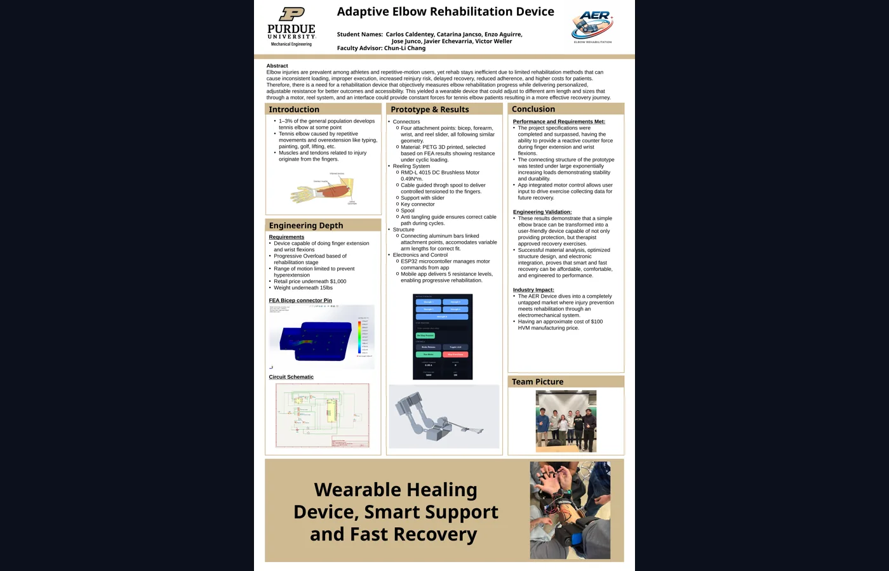
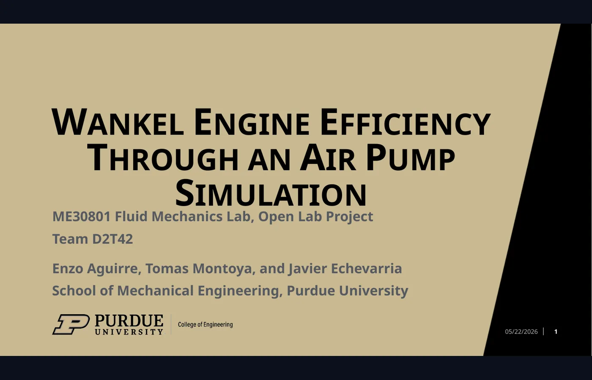
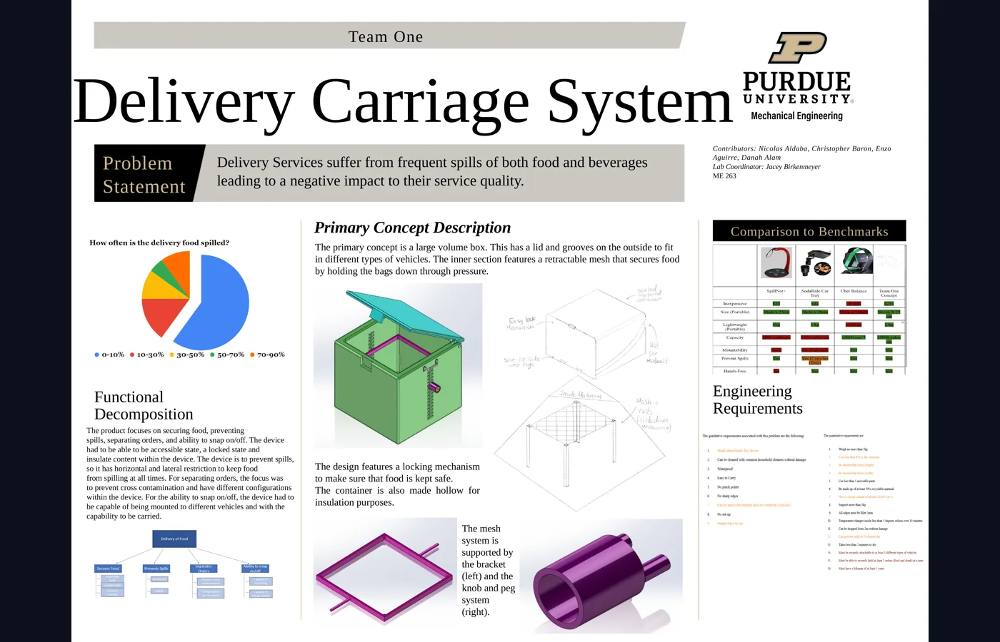
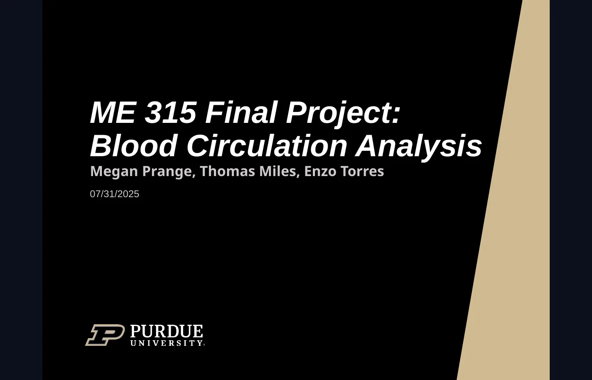
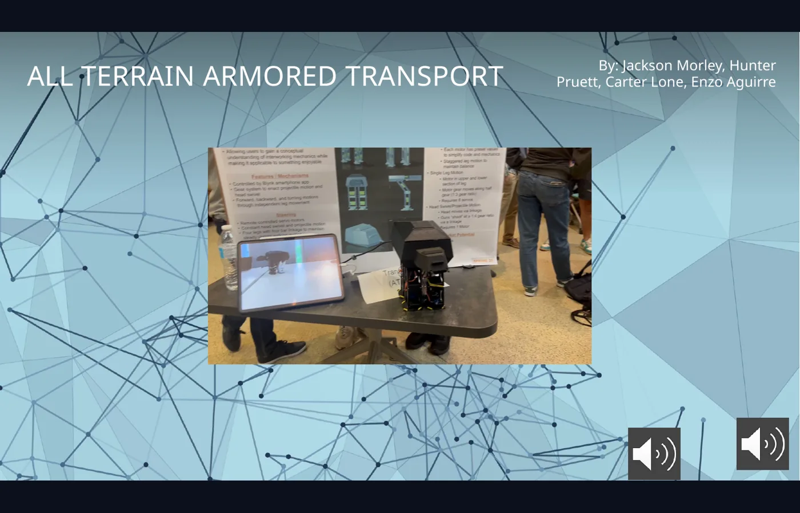

Capstone • Electromechanical Medical Device
Adaptive Elbow Rehabilitation Device
Wearable rehabilitation prototype that uses a motorized reel system to provide adjustable resistance for wrist and finger extension exercises.
Mechanical Design • Product Development • Prototyping
Mechanical engineering graduate focused on turning concepts into working prototypes through CAD, FEA, fabrication, testing, and electromechanical integration.
Featured Projects
Projects are written as portfolio case studies: what the problem was, what I built, what tools I used, and what engineering decisions mattered.

Capstone • Electromechanical Medical Device
Wearable rehabilitation prototype that uses a motorized reel system to provide adjustable resistance for wrist and finger extension exercises.

Fluid Mechanics • Prototype Testing
Scaled Wankel-style model used to compare mechanical input against air-based pressure and flow output using sensors and MATLAB analysis.
Mechanical Design • Structural Analysis
Sport-sedan brake assembly concept with fixed caliper geometry, piston layout, pad packaging, and structural validation around clamp loading.

Product Design • Concept Development
Food delivery storage concept designed to reduce spills through a lockable insulated box, vehicle mounting features, and internal securing mesh.

Heat Transfer • Simulation
Thermal-fluid model comparing theoretical, SolidWorks, and ANSYS results for blood flow through a simplified vein under different environments.

Mechatronics • Consumer Product Prototype
3D-printed walking toy controlled through the Blynk app, integrating servo motion, gearing, linkages, magnets, and modular printed assemblies.
About Me
I’m a mechanical engineering graduate from Purdue University with a strong interest in product development, mechanical design, electromechanical systems, and automotive-style hardware. I like projects where the final result is not just a model, but something that can be built, tested, adjusted, and improved.
My work usually sits at the intersection of CAD, prototyping, structural analysis, and testing. I’ve designed mechanisms and structures, supported EV and ICE kart platforms, integrated motors and controls into prototypes, and used FEA or sensor data to make design decisions less subjective.
I’m especially interested in roles where I can contribute to real hardware: CAD modeling, tolerance-aware design, testing, manufacturing support, and hands-on iteration with cross-functional teams.
Technical Skills
Creo Parametric, SolidWorks, Siemens NX, Fusion 360, mechanical design, product development, tolerance awareness, GD&T, technical drawings.
FEA, MATLAB, Excel, ANSYS/SolidWorks simulation workflows, sensor-based testing, load cases, stress concentrations, deformation review.
3D printing, CNC, woodworking, fabrication, assembly, design for manufacturability, fitment checks, iterative prototype development.
ESP32, CAN bus motor control, Arduino-style prototyping, app-integrated controls, electromechanical system integration, wiring/debugging.
Experience
Designed drivetrain and supporting mechanical components for EV and ICE kart platforms while considering torque loads, packaging, manufacturability, durability, and serviceability.
Worked across maintenance, development, and supply chain operations in an active mining environment, coordinating with equipment support teams and supporting machine readiness.
Resume
Embed may not display on every browser. Use the download button if needed.
Contact
I’m open to mechanical design, product development, CAD, testing, prototyping, and electromechanical hardware opportunities.